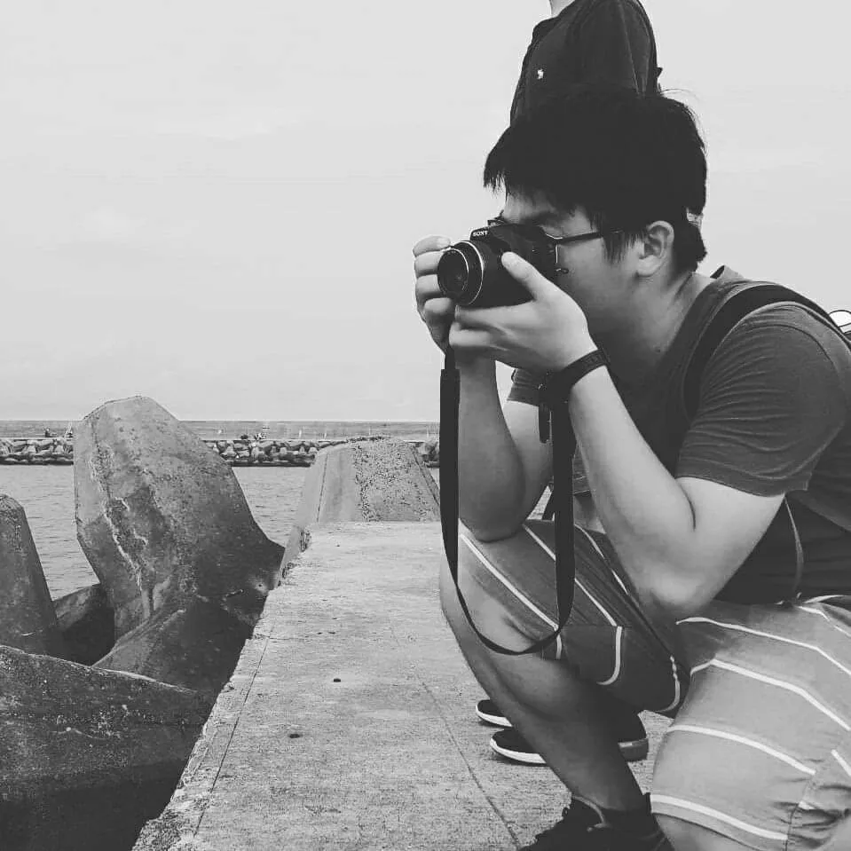

報真
導正
花蓮慈濟醫院 公共傳播室
服務
作品
團隊
首頁
我們的服務
我們的作品
我們的團隊
Public Commucation
公共傳播室
紀錄每一個在醫院發生的動人故事
傳遞慈濟人文的溫度與光
SCROLL
SERVICE GATEWAY
我們的服務
01
⚠ 需院內網路
公傳服務總覽
人員照片下載、業務申請窗口、院內公版素材取得及網站管理後台入口。
🔐 進入服務頁 →
02
Joomla 教學文件
醫院官網、醫療科網的管理教學，涵蓋基礎操作到各部門進階指南。
📖 開啟教學文件 →
03
傳播成效儀表板
YouTube 頻道即時數據、社群媒體指標與 Google Analytics 網站流量報表。
📊 查看數據 →
公傳成果
我們的作品
01
活動專網
40 周年慶
記錄花蓮慈濟醫院四十年間的醫療故事、 人文歷程與重要里程碑。
前往專網 →
02
展覽專網
醫療科技展
台灣醫療科技展參展成果， 呈現花蓮慈濟醫院的醫療研究與技術創新。
前往展區 →
03
影音頻道
YouTube 頻道
醫療衛教、活動紀錄與人文故事， 持續更新的官方影音平台。
前往頻道 →
04
虛擬實境
VR 虛擬導覽
以 VR 方式身歷其境， 導覽各展場與活動現場， 突破距離限制感受現場氛圍。
進入導覽 →
OUR TEAM
我們的團隊
01
游繡華
主任
☎ 分機 13470
單位業務統籌督導與考核
慈濟醫療人文月刊撰述委員
02
黃思齊
高級專員
☎ 分機 15202
單位編列預算
醫院王牌主持人
03
吳宛霖
組長
☎ 分機 15202
醫療題材匯總新聞編輯
投稿灼見名家
04
劉明繐
組長
☎ 分機 15201
美術編輯設計
05
江家瑜
助理專員
☎ 分機 13548
記者會籌辦及媒體合作
06
曾建瑋
助理專員
☎ 分機 15295
官網系統維運管理
07
徐立勤
組員
☎ 分機 15295
影片攝影剪輯

08
曾定嘉
組員
☎ 分機 13548
新聞採訪編輯
09
陳怡璇
組員
☎ 分機 15201
美術編輯設計
延伸閱讀
深入了解我們
→
公共傳播室歷年成果總覽
→
雙軌衛教創新亮點
→
防詐騙宣導專區
→
台灣醫療科技展傳播規劃
→
重大災難危機傳播應變
→
健康資訊正確性把關機制
→
App 傳播推廣